Left: the game today. Right: a real 3D camera that turns on when you go under ground. It is tilted and in perspective, every side of every block is drawn, a lantern lights the space round you, and daylight marks the way out. Horizon: your pick 3 is built.
My honest view: the canyon finally has depth. Not good yet: your cat is drawn too small, the water is one flat blue, the meadow over you goes dark, a stair going away reads as a ramp, and a deep pit shows only as a hole. Tell me if this is the direction, and I will fix those.
The canyon
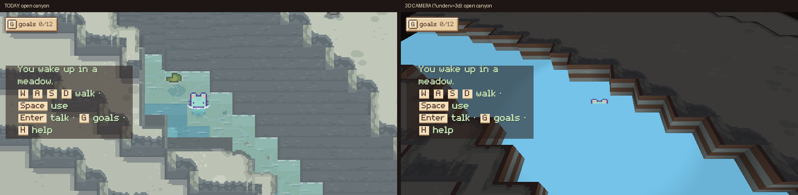
Your dug staircase, halfway
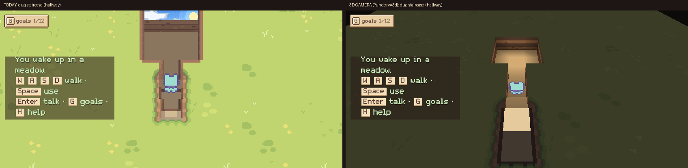
The room at its foot
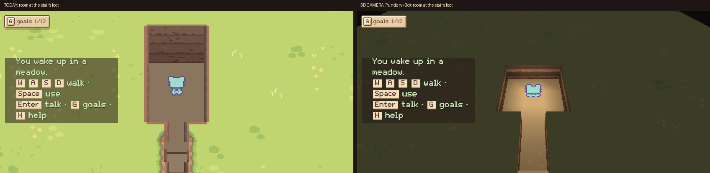
A cave
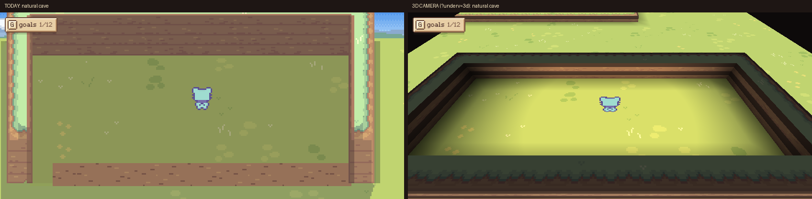
A pit 8 levels deep
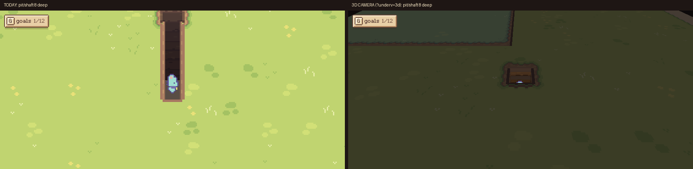
Walking down the stair, 12 frames
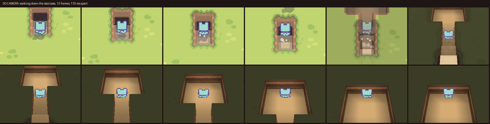
You picked: the land's light (1 + 2 + 3), the side of a block (4), water you can see through (10). Below is what they look like, real pictures of the game. In the game means reload and you have it; coming means built, being checked.
Left: the game today. Right: built, being tested. Each level of stone has its own tone on top (darker low, as the pack paints it high), a band of shade at the foot of each step, a darker rim where a top drops. Walls are one even face at every hour: they take no cast shadow any more (four tries each drew wedges or squares on your canyon wall).
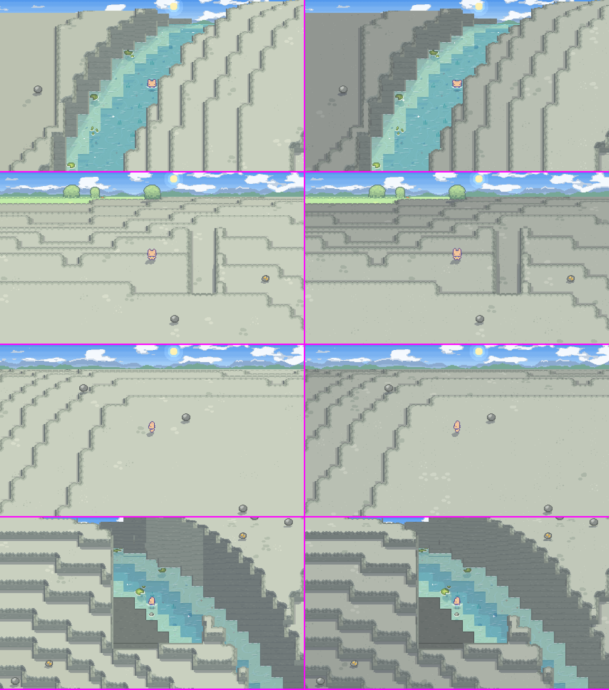
Left: the game today. Right: the same wall as it is in the game now. Morning, noon, evening, and noon with the Natural shader. One rock from rim to foot, no squares; the water is the one you picked.


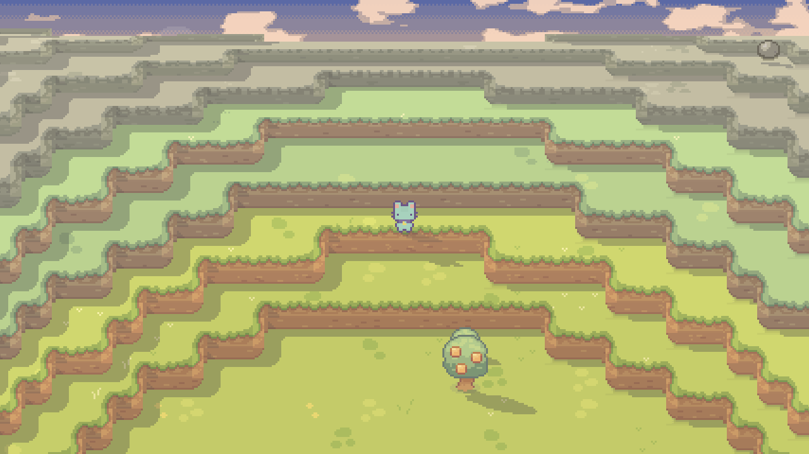

Look at the lake. 0 is the game today. In 7 the bed is real blocks under the water: sand steps down from the bank and the water gets deeper blue over it. 8 adds the bed shifting a pixel under the ripple, 9 light lines and the lily pad's shade on the bed, 10 is my pick of them (clear near you, less clear far away). 7 to 10 differ little in a still picture: the step that matters is 0 to 7.
It is stepped, as the land is: a pond goes down a level at a time from its bank. Not in the game.


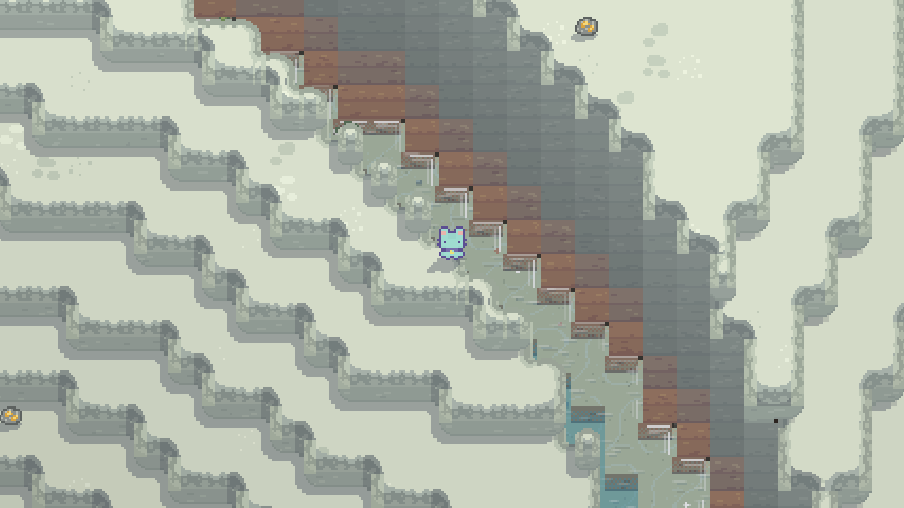


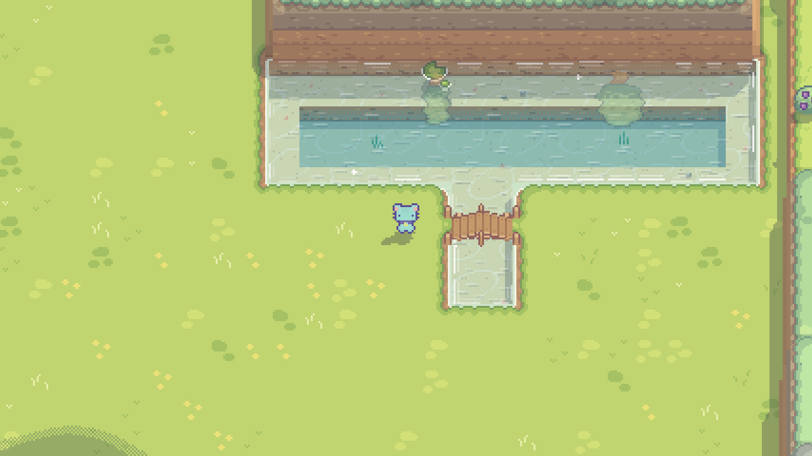

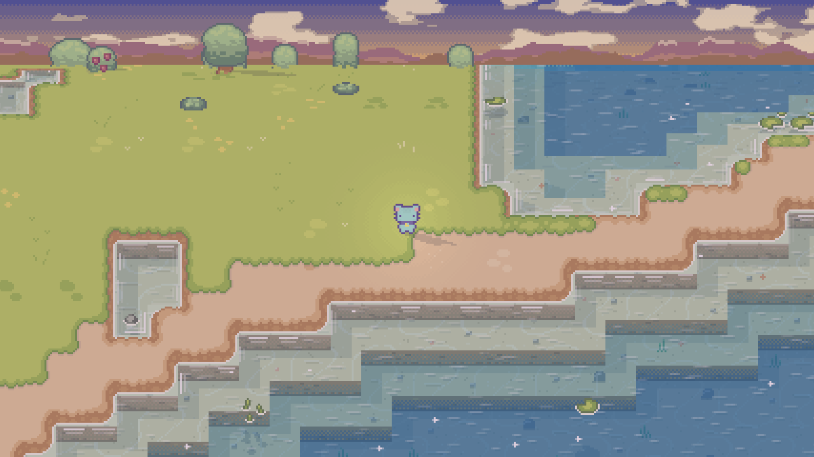
Picked already: the land's light (1 + 2 + 3, in the game), the side of a block (4, landing).